Planning with Learned World Models
Model-predictive control with learned models
Model-based RL algorithms with learned models
Model-based augmented model-free (MBMF)
- Dyna-Q: the model generates imaginary transitions/rollouts that are used to train a MF algorithm.
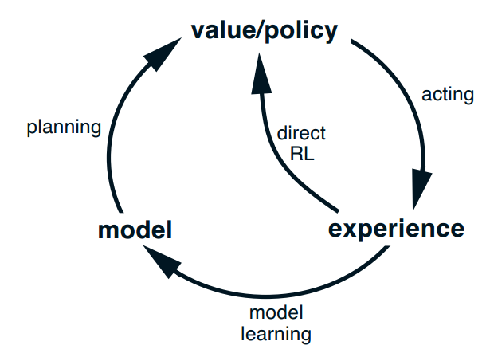
NAF: Normalized advantage functions [@Gu2016]
I2A: Imagination-augmented agents [@Weber2017]
MBVE: model-based value estimation [@Feinberg2018]
Model-based planning
- MPC: the learned model is used to plan actions that maximize the RL objective.
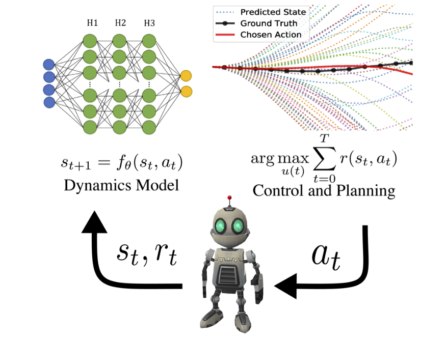
TDM: Temporal difference models [@Pong2018]
World models [@Ha2018]
PlaNet [@Hafner2019]
Dreamer [@Hafner2020]
1 - Model predictive control (MPC)
Learning from imaginary rollouts
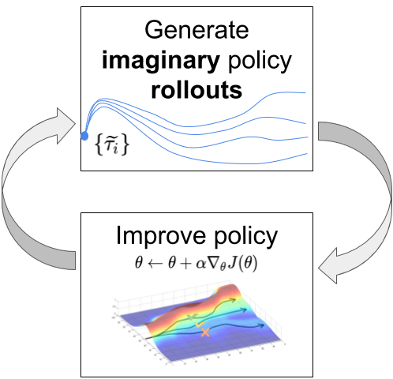
With a good transition model, you can generate rollouts, i.e. imaginary trajectories / episodes using the model.
Given an initial state \(s_0\) and a policy \(\pi\), you can unroll the future using the model \(s', r = M(s, a)\).
\[ \tau = s_0 \xrightarrow[\pi]{} a_0 \xrightarrow[M]{} s_1 \xrightarrow[\pi]{} a_1 \xrightarrow[\pi]{} s_2 \xrightarrow[]{} \ldots \xrightarrow[M]{} s_T \]
- You can then feed these trajectories to any optimizer (classical or model-free RL algorithm) that will learn to maximize the returns.
- The only sample complexity is the one needed to train the model: the rest is emulated.
Imperfect model
- For long horizons, the slightest imperfection in the model can accumulate (drift) and lead to completely wrong trajectories.
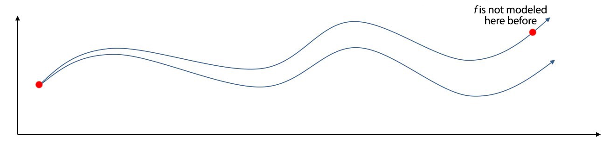
The emulated trajectory will have a biased return, the algorithm does not converge to the optimal policy.
If you have a perfect model, you should not be using RL anyway, as classical control methods would be much faster (but see AlphaGo).
MPC - Model Predictive Control
- The solution is to replan at each time step and execute only the first planned action in the real environment.
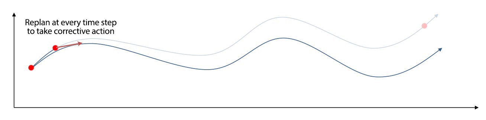
- Replanning avoids accumulating errors over long horizons.
MPC - Model Predictive Control
Collect transitions \((s, a, r, s')\) using a (random/expert) policy \(b\) and create an initial dataset \(\mathcal{D} = \{(s_k, a_k, r_, s'_k\}_{k}\).
while not converged:
(Re)Train the dynamics model \(M(s, a) = (s', r)\) on \(\mathcal{D}\) using supervised learning.
foreach step \(t\) in the trajectory:
- Plan a trajectory from the current state \(s_t\) using the model \(M\), returning a sequence of planned actions:
\[a_{t}, a_{t+1}, \ldots, a_T\]
Take the first action \(a_t\), observe the next state \(s_{t+1}\).
Append the transition \((s_t, a_t, s_{t+1})\) to the dataset.
MPC - Example with a neural model
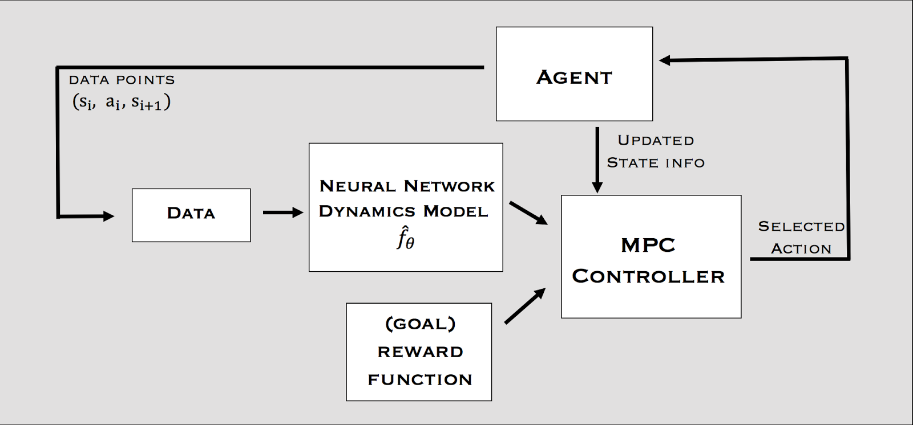
MPC - Example with a neural model
The planner can actually be anything, it does not have to be a RL algorithm. Examples:
iLQR (Iterative Linear Quadratic Regulator), a non-linear optimization method.
https://jonathan-hui.medium.com/rl-lqr-ilqr-linear-quadratic-regulator-a5de5104c750.
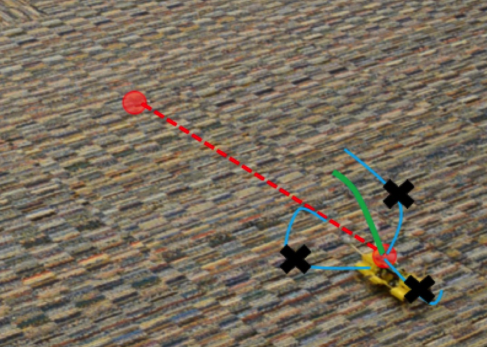
Random-sampling shooting:
in the current state, select a set of possible actions.
generate rollouts with these actions and compute their returns using the model.
select the action whose rollout has the highest return.
Stochastic sampling methods such as the cross-entropy method CEM, where the policy is sampled using Bayesian methods [@Szita2006],
Genetic algorithms such as Evolutionary Search (ES) [@Salimans2017]…
MPC - Example with a neural model
The main advantage of MPC is that you can change the reward function (the goal) on the fly: what you learn is the model, but planning is just an optimization procedure.
You can set intermediary goals to the agent very flexibly: no need for a well-defined reward function.
Model imperfection is not a problem as you replan all the time. The model can adapt to changes in the environment (slippery terrain, simulation to real-world).
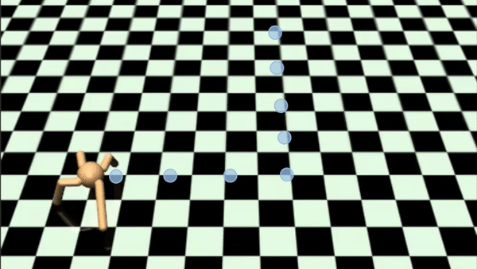
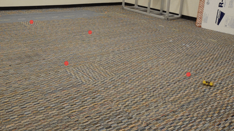
2 - World models
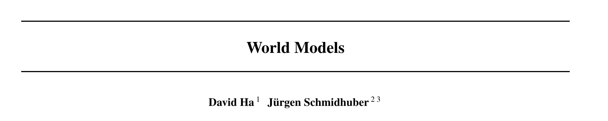
World models
The core idea of world models is to explicitly separate the world model (what will happen next) from the controller (how to act).
Deep RL NN are usually small, as rewards do not contain enough information to train huge networks.
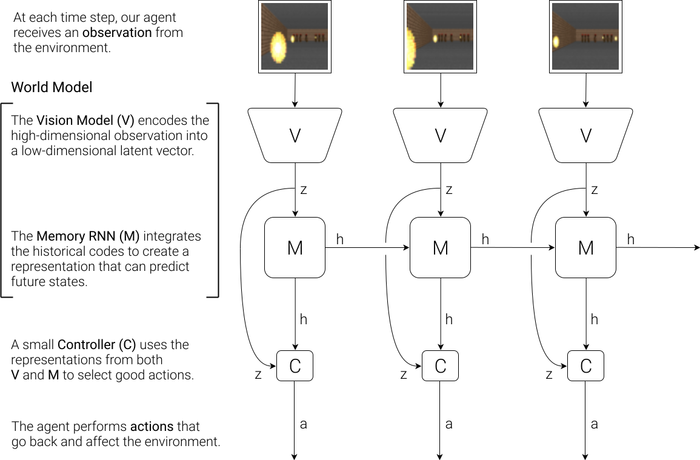
World models
A huge world model can be efficiently trained by supervised or unsupervised methods.
A small controller should not need too many trials if its input representations are good.
The Vizdoom Take Cover environment
World models
The vision module \(V\) is trained as a variational autoencoder (VAE) on single frames of the game.
The latent vector \(\mathbf{z}_t\) contains a compressed representation of the frame \(\mathbf{o}_t\).
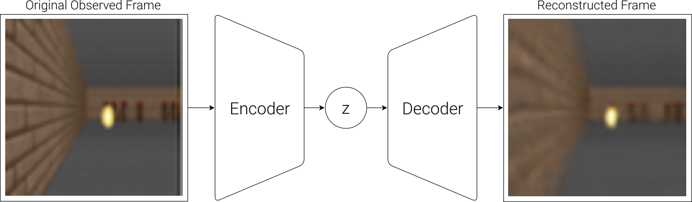
World models
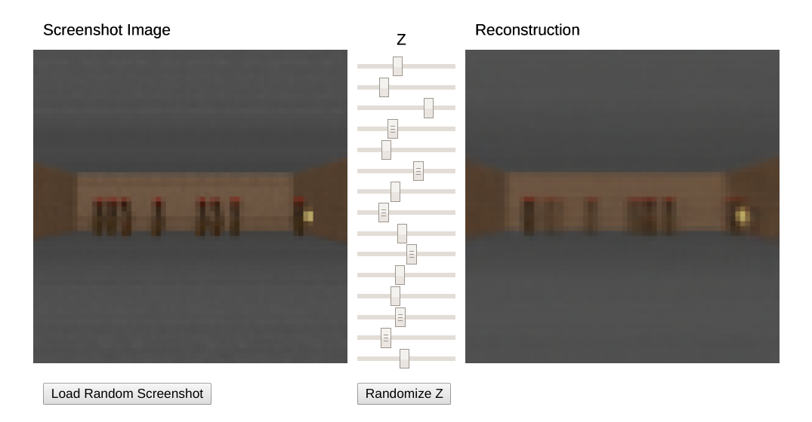
- Go to https://worldmodels.github.io/ for an interactive demo.
World models
The sequence of latent representations \(\mathbf{z}_0, \ldots \mathbf{z}_t\) in a game is fed to a LSTM layer together with the actions \(a_t\) to compress what happens over time.
A Mixture Density Network (MDN) is used to predict the distribution of the next latent representations \(P(\mathbf{z}_{t+1} | a_t, \mathbf{h}_t, \ldots \mathbf{z}_t)\).
The RNN-MDN architecture has been used successfully in the past for sequence generation problems such as generating handwriting and sketches (Sketch-RNN).
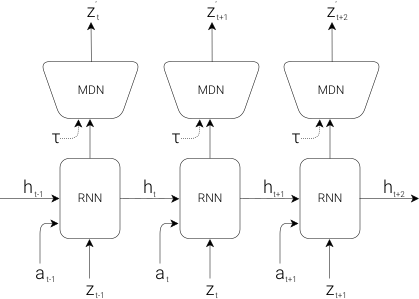
Sketch-RNN
World models
- The last step is the controller. It takes a latent representation \(\mathbf{z}_t\) and the current hidden state of the LSTM \(\mathbf{h}_t\) as inputs and selects an action linearly:
\[a_t = \text{tanh}(W \, [\mathbf{z}_t, \mathbf{h}_t ] + b)\]
- A RL actor cannot get simpler as that…
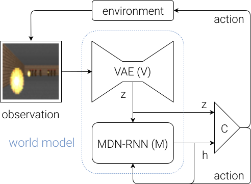
The controller is not even trained with RL: it uses a genetic algorithm, the Covariance-Matrix Adaptation Evolution Strategy (CMA-ES), to find the output weights that maximize the returns.
The world model is trained by classical supervised learning using a random agent before learning.
World models : car racing
World models : car racing
Below is the input of the VAE and the reconstruction.
The reconstruction does not have to be perfect as long as the latent space is informative.
World models : car racing
- Controller seeing only \(\mathbf{z}_t\).
- Controller seeing both \(\mathbf{z}_t\) and \(\mathbf{h}_t\).
- Having access to a full rollout of the future leads to more stable driving.
World models
Algorithm:
Collect 10,000 rollouts from a random policy.
Train VAE (V) to encode each frame into a latent vector \(\mathbf{z} \in \mathcal{R}^{32}\).
Train MDN-RNN (M) to model \(P(\mathbf{z}_{t+1} | a_t, \mathbf{h}_t, \ldots \mathbf{z}_t)\).
Evolve Controller (C) to maximize the expected cumulative reward of a rollout.
Parameters for car racing:
| Model | Parameter Count |
|---|---|
| VAE | 4,348,547 |
| MDN-RNN | 422,368 |
| Controller | 867 |
World models : car racing
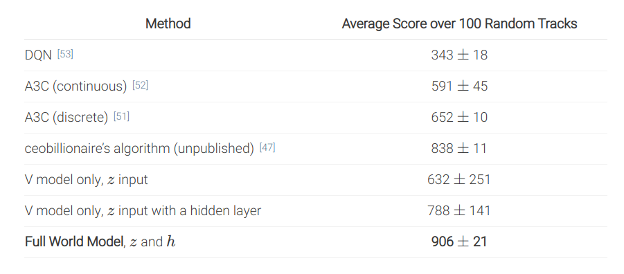
World models
The world model V+M is learned offline with a random agent, using unsupervised learning.
The controller C has few weights (1000) and can be trained by evolutionary algorithms, not even RL.
The network can even learn by playing entirely in its own imagination as the world model can be applied on itself and predict all future frames.
It just need to additionally predict the reward.
The learned policy can then be transferred to the real environment.
3 - Deep Planning Network - PlaNet
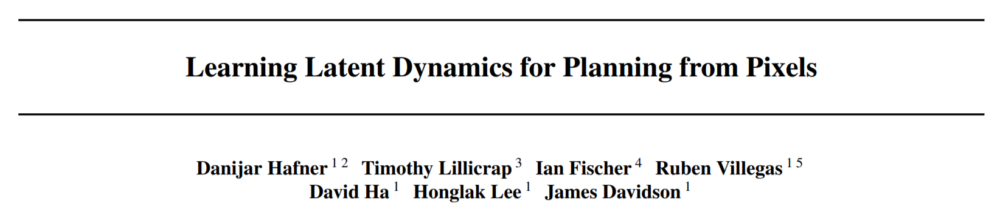
PlaNet
PlaNet extends the idea of World models by learning the model together with the policy (end-to-end).
It learns a latent dynamics model that takes the past observations \(o_t\) into account (needed for POMDPs):
\[s_{t}, r_{t+1}, \hat{o}_t = f(o_t, a_t, s_{t-1})\]
and plans in the latent space using multiple rollouts:
\[a_t = \text{arg}\max_a \mathbb{E}[R(s_t, a, s_{t+1}, \ldots)]\]
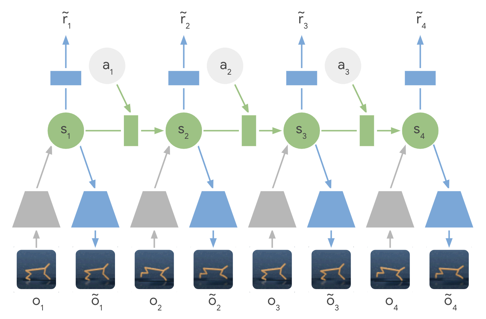
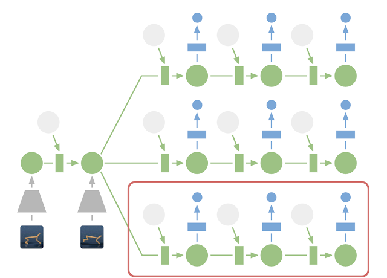
PlaNet: latent dynamics model
PlaNet: latent dynamics model
- The latent dynamics model is a sequential variational autoencoder learning concurrently:
- An encoder from the observation \(o_t\) to the latent space \(s_t\).
\[q(s_t | o_t)\]
- A decoder from the latent space to the reconstructed observation \(\hat{o}_t\).
\[p(\hat{o}_t | s_t)\]
- A transition model to predict the next latent representation given an action.
\[p(s_{t+1} | s_t, a_t)\]
- A reward model predicting the immediate reward.
\[p(r_t | s_t)\]
PlaNet: latent dynamics model
- The loss function to train this recurrent state-space model (RSSM) simply adds up the three learning objectives (VAE + world model + reward).
\[ \mathcal{L}(\theta) = \mathcal{L}_\text{reconstruction}(\theta) + \mathcal{L}_\text{prediction}(\theta) + \mathcal{L}_\text{reward}(\theta) \]
Training sequences \((o_1, a_1, o_2, \ldots, o_T)\) can be generated off-policy (e.g. from demonstrations) or on-policy.
Backpropagation through time (BPTT) can be applied on complete (or partial) sequences.
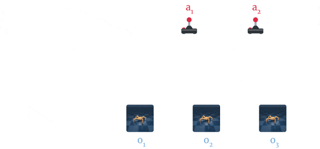
PlaNet: latent space planning
PlaNet: latent space planning
From a single observation \(o_t\) encoded into \(s_t\), 10000 rollouts are generated using random sampling.
A belief over action sequences is updated using the cross-entropy method (CEM) in order to restrict the search.
The first action of the sequence with the highest estimated return (reward model) is executed.
At the next time step, planning starts from scratch: Model Predictive Control.
There is no actor in PlaNet, only a transition model used for planning.
PlaNet results
- Planet learns continuous image-based control problems in 2000 episodes, where D4PG needs 50 times more.
PlaNet results
The latent dynamics model can learn 6 control tasks at the same time.
As there is no actor, but only a planner, the same network can control all agents!
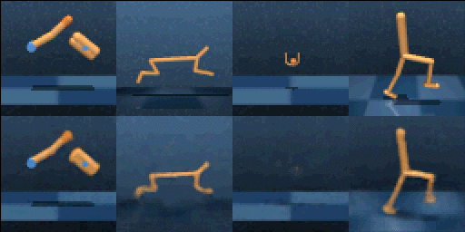
4 - Dreamer
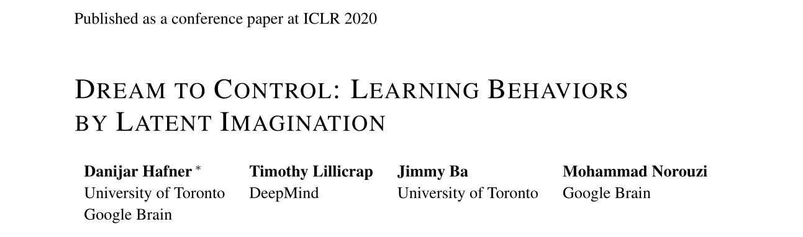
Dreamer
Dreamer extends the idea of PlaNet by additionally training an actor instead of using a MPC planner.
The latent dynamics model is the same RSSM architecture.
Training a “model-free” actor on imaginary rollouts instead of MPC planning should reduce the computational time.
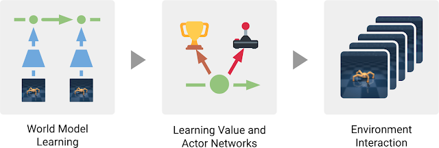
Dreamer: latent dynamics model
- The latent dynamics model is the same as in PlaNet, learning from past experiences.
Dreamer: behavior module
The behavior module learns to predict the value of a state \(V_\varphi(s)\) and the policy \(\pi_\theta(s)\) (actor-critic).
It is trained in imagination in the latent space using the reward model for the immediate rewards (to compute returns) and the transition model for the next states.
The current observation \(o_t\) is encoded into a state \(s_t\), the actor selects an action \(a_t\), the transition model predicts \(s_{t+1}\), the reward model predicts \(r_{t+1}\), the critic predicts \(V_\varphi(s_t)\).
At the end of the sequence, we apply backpropagation-through-time to train the actor and the critic.
Dreamer: behavior module
- The critic \(V_\varphi(s_t)\) is trained on the imaginary sequence \((s_t, a_t, r_{t+1}, s_{t+1}, \ldots, s_T)\) to minimize the prediction error with the \(\lambda\)-return:
\[R^\lambda_t = (1 - \lambda) \, \sum_{n=1}^{T-t-1} \lambda^{n-1} \, R^n_t + \lambda^{T-t-1} \, R_t\]
- The actor \(\pi_\theta(s_t, a_t)\) is trained on the sequence to maximize the sum of the value of the future states:
\[\mathcal{J}(\theta) = \mathbb{E}_{s_t, a_t \sim \pi_\theta} [\sum_{t'=t}^T V_\varphi(s_{t'})]\]
Dreamer
The main advantage of training an actor is that we need only one rollout when training it: backpropagation maximizes the expected returns.
When acting, we just need to encode the history of the episode in the latent space, and the actor becomes model-free!
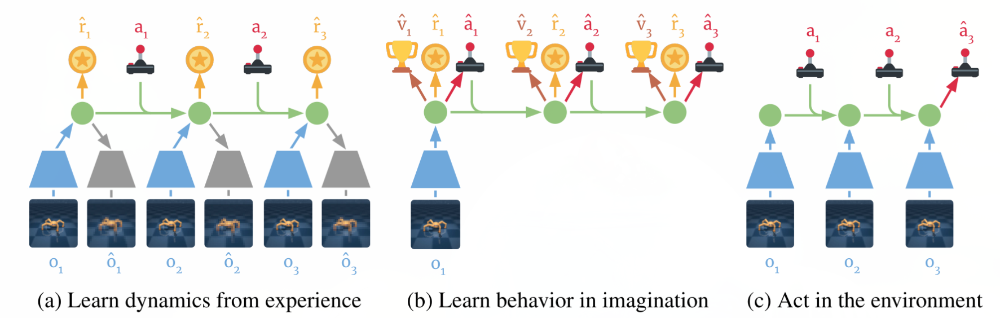
Dreamer results
- Dreamer beats model-free and model-based methods on 20 continuous control tasks.
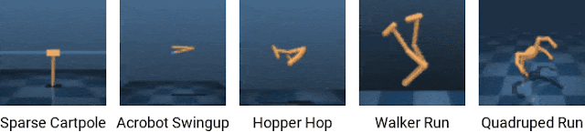
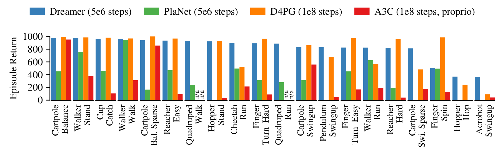
Dreamer results
- It also learns Atari and Deepmind lab video games, sometimes on par with Rainbow or IMPALA!
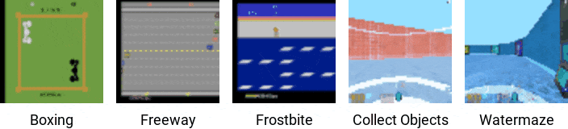
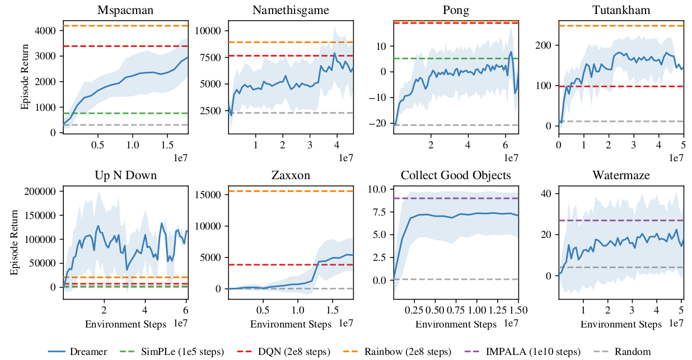
DayDreamer
- A recent extension of Dreamer, DayDreamer, allows physical robots to learn complex tasks in a few hours.
https://danijar.com/daydreamer
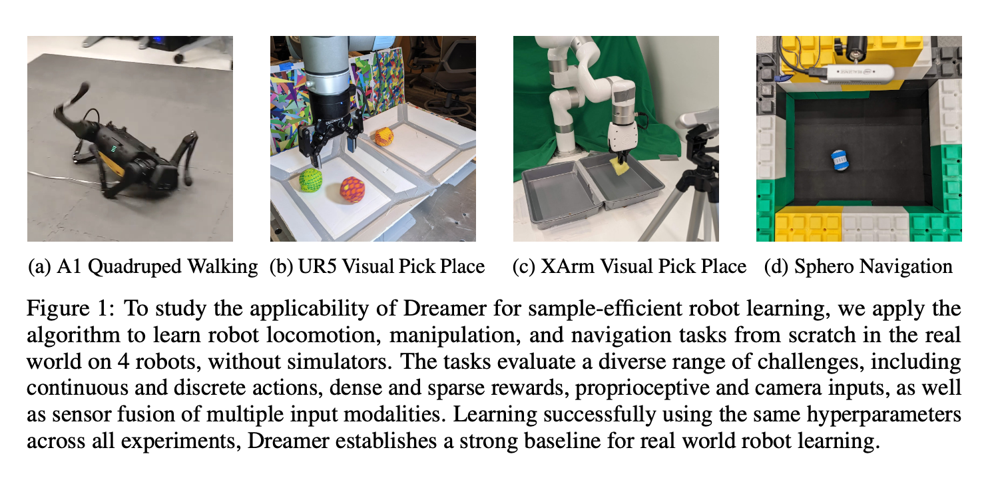
DayDreamer
{{< youtube xAXvfVTgqr0 >}}Dreamer v3
The third iteration of Dreamer established SoTA performance on more than 150 benchmarks.
It is the first algorithm to collect diamonds in Minecraft from scratch without human data or curricula.
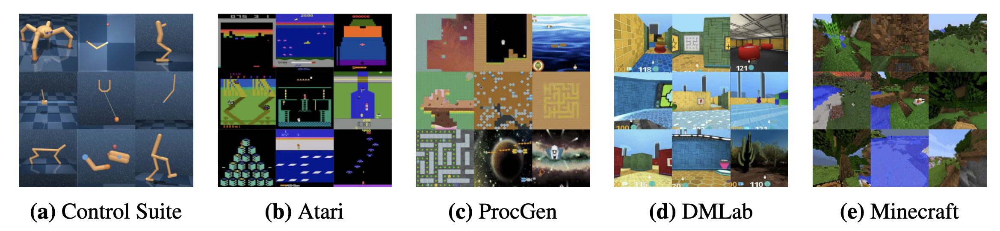
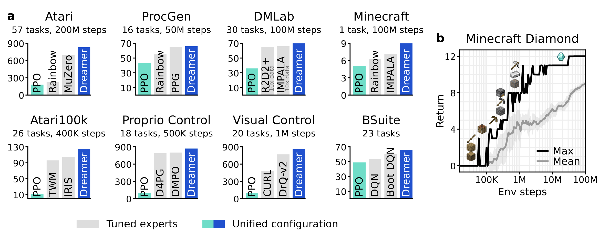
5 - Temporal difference models - TDM (skipped)
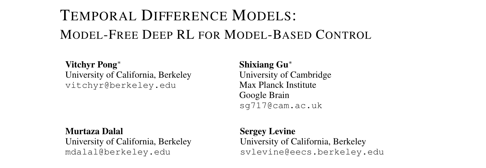
TDM
One problem with model-based planning is the discretization time step (difference between \(t\) and \(t+1\)).
It is determined by the action rate: how often a different action \(a_t\) has to be taken.
In robotics, it could be below the millisecond, leading to very long trajectories in terms of steps.
If you want to go from Berkeley to the Golden State bridge with your bike, planning over leg movements will be very expensive (long horizon).
A solution is multiple steps ahead planning. Instead of learning a one-step model:
\[s_{t+1} = f_\theta(s_t, a_t)\]
one learns to predict the state achieved in \(T\) steps using the current policy:
\[s_{t+ T} = f_\theta(s_t, a_t, \pi)\]
- Planning and acting occur at different time scales.
TDM
- A problem with RL in general is how to define the reward function.
If you goal is to travel from Berkeley to the Golden State bridge, which reward function should you use?
+1 at the bridge, 0 otherwise (sparse).
+100 at the bridge, -1 otherwise (sparse).
minus the distance to the bridge (dense).
Goal-conditioned RL defines the reward function using the distance between the achieved state \(s_{t+1}\) and a goal state \(s_g\):
\[r(s_t, a_t, s_{t+1}) = - || s_{t+1} - s_g ||\]
An action is good if it brings the agent closer to its goal.
The Euclidean distance works well for the biking example (e.g. using a GPS), but the metric can be adapted to the task.
Goal-conditioned RL
One advantage is that you can learn multiple “tasks” at the same time with a single policy, not the only one hard-coded in the reward function.
Another advantage is that it makes a better use of exploration by learning from mistakes: hindsight experience replay (HER, Andrychowicz et al., 2017).
If your goal is to reach \(s_g\) but the agent generates a trajectory landing in \(s_{g'}\), you can learn that this trajectory is good way to reach \(s_{g'}\)!
In football, if you try to score a goal but end up doing a pass to a teammate, you can learn that this was a bad shot and a good pass.
HER is a model-based method: you implicitly learn a model of the environment by knowing how to reach any position.
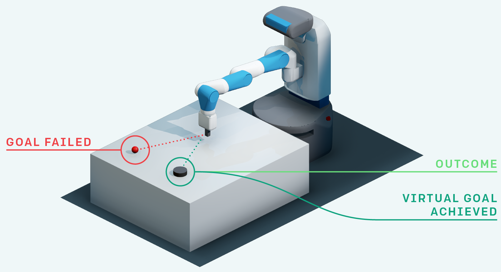
Exploration never fails: you always learn to do something, even if this was not your original goal.
The principle of HER can be used in all model-free methods: DQN, DDPG, etc.
TDM
- Using the goal-conditioned reward function \(r(s_t, a_t, s_{t+1}) = - || s_{t+1} - s_g ||\), how can we learn?
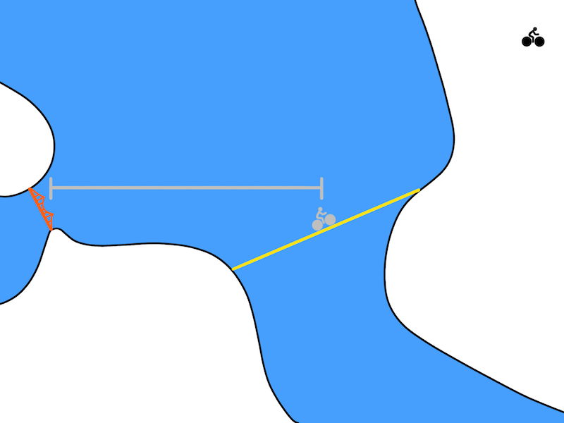
TDM introduces goal-conditioned Q-value with a horizon \(T\): \(Q(s, a, s_g, T)\).
The Q-value of an action should denote how close we will be from the goal \(s_g\) in \(T\) steps.
If we can estimate these Q-values, we can use a planning algorithm such as MPC to find the action that will bring us closer to the goal easily:
\[a^* = \text{arg}\max_{a_t} \, r(s_{t+T}, a_{t+T}, s_{t+T + 1})\]
- This corresponds to planning \(T\) steps ahead; which action should I do now in order to be close to the goal in \(T\) steps?
TDM
If the horizon \(T\) is well chosen, we only need to plan over a small number of intermediary positions, not over each possible action.
TDM is model-free on each subgoal, but model-based on the whole trajectory.
TDM
How can we learn the goal-conditioned Q-values \(Q(s, a, s_g, T)\) with a model?
TDM introduces a recursive relationship for the Q-values:
\[\begin{aligned} Q(s, a, s_g, T) &= \begin{cases} \mathbb{E}_{s'} [r(s, a, s')] \; \text{if} \; T=0\\ &\\ \mathbb{E}_{s'} [\max_a \, Q(s', a, s_g, T-1)] \; \text{otherwise.}\\ \end{cases} \\ &\\ &= \mathbb{E}_{s'} [r(s, a, s') \, \mathbb{1}(T=0) + \max_a \, Q(s', a, s_g, T-1) \, \mathbb{1}(T\neq 0)]\\ \end{aligned} \]
If we plan over \(T=0\) steps, i.e. immediately after the action \((s, a)\), the Q-value is the remaining distance to the goal from the next state \(s'\).
Otherwise, it is the Q-value of the greedy action in the next state \(s'\) with an horizon \(T-1\) (one step shorter).
This allows to learn the Q-values from single transitions \((s_t, a_t, s_{t+1})\):
with \(T=0\), the target is the remaining distance to the goal.
with \(T>0\), the target is the Q-value of the next action at a shorter horizon.
TDM
- The critic learns to minimize the prediction error off-policy:
\[ \begin{aligned} \mathcal{L}(\theta) = & \mathbb{E}_{s_t, a_t, s_{t+1} \in \mathcal{D}} [ & \\ & (r(s_t, a_t, s_{t+1}) \, \mathbb{1}(T=0) + \max_a \, Q(s_{t+1}, a, s_g, T-1) \, \mathbb{1}(T\neq 0) - Q(s_t, a_t, s_g, T))^2 & \\ && ] \end{aligned} \]
This is a model-free Q-learning-like update rule, that can be learned by any off-policy value-based algorithm (DQN, DDPG) and an experience replay memory.
The cool trick is that, with a single transition \((s_t, a_t, s_{t+1})\), you can train the critic with:
different horizons \(T\), e.g. between 0 and \(T_\text{max}\).
different goals \(s_g\). You can sample any achievable state as a goal, including the “true” \(s_{t+T}\) (hindsight).
You do not only learn to reach \(s_g\), but any state! TDM learns a lot of information from a single transition, so it has a very good sample complexity.
Summary of TDM
TDM learns to break long trajectories into finite horizons (model-based planning) by learning model-free (Q-learning updates).
The critic learns how good an action (s, a) is order to reach a state \(s_g\) in \(T\) steps.
\[Q(s, a, s_g, T) = \mathbb{E}_{s'} [r(s, a, s') \, \mathbb{1}(T=0) + \max_a \, Q(s', a, s_g, T-1) \, \mathbb{1}(T\neq 0)]\]
- The actor uses MPC planning to iteratively select actions that bring us closer to the goal in \(T\) steps:
\[a_t = \text{arg}\max_{a} \, Q(s_{t}, a, s_{g}, T)\]
The argmax can be estimated via sampling.
TDM is a model-based method in disguise: it does predict the next state directly, but how much closer it will be to the goal via Q-learning.
TDM results
- For problems where the model is easy to learn, the performance of TDM is on par with model-based methods (MPC).
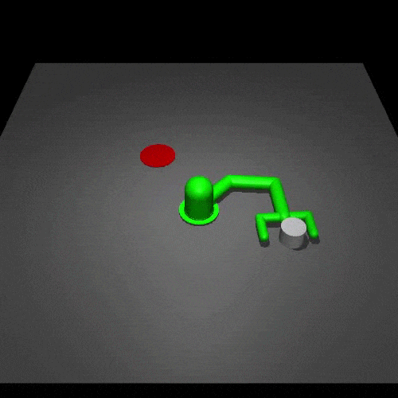
Model-free methods have a much higher sample complexity.
TDM learns much more from single transitions.
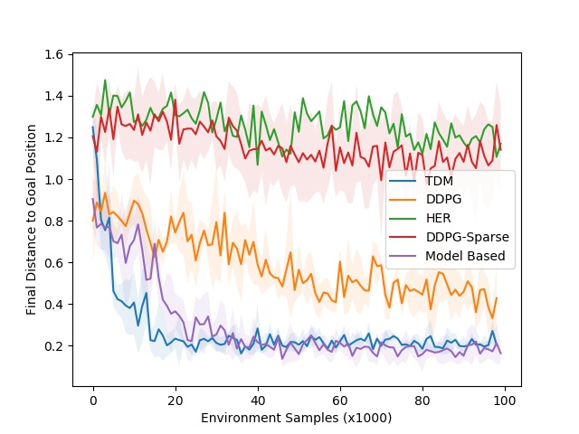
TDM results
- For problems where the model is complex to learn, the performance of TDM is on par with model-free methods (DDPG).
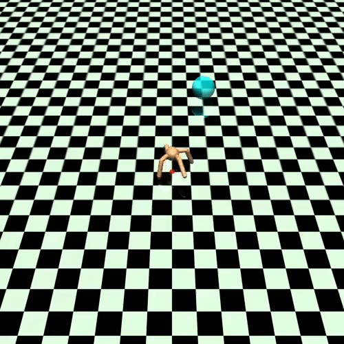
Model-based methods suffer from model imprecision on long horizons.
TDM plans over shorter horizons \(T\).
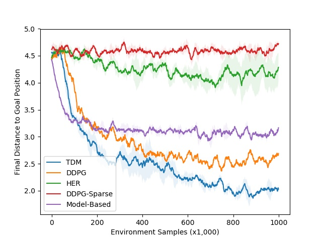